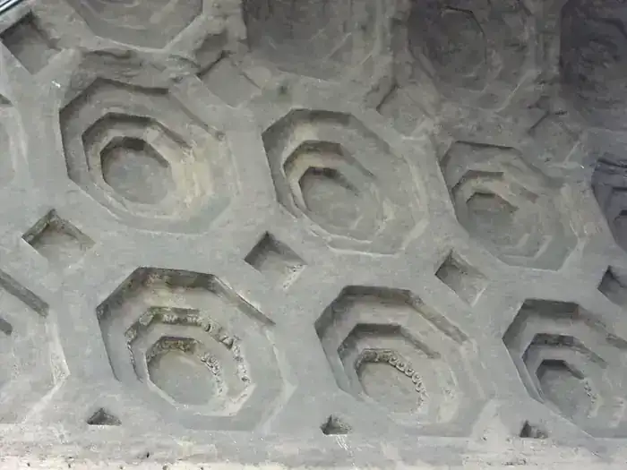
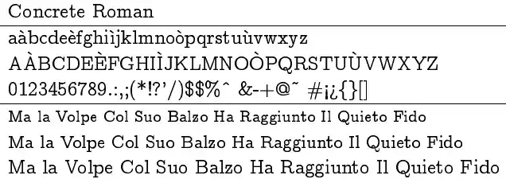

The material
Roman concrete used volcanic ash — pozzolana — with lime and aggregate. In seawater it formed aluminous tobermorite, a mineral that strengthens over time, which is why Roman harbour structures have outlasted modern ones.
Maps, diagrams and images




The material's other property is self-healing. Lime clasts embedded in the concrete remain reactive: when a crack forms and water reaches them, they dissolve and recrystallise as calcium carbonate, sealing the crack.
The 2023 result
A team at MIT published an analysis in 2023 arguing that the lime clasts were not an impurity but a deliberate ingredient, made from quicklime rather than slaked lime, and demonstrated a modern concrete made the same way that healed its own cracks. That is the rare case of an ancient technology being not merely admired but understood and reproduced.
Documented: the durability of Roman marine concrete, and the mineral that explains it.
Documented: self-healing through lime clasts, observed and explained.
Documented: a modern reproduction that heals cracks.
Contested: how deliberate the Roman formulation was — the 2023 paper argues yes.
The honest label: documented. The mechanism is measured, and the reproduction works.
Why it is in the archive
Because the archive collects lost knowledge claims, and this is the one where the knowledge was recovered rather than romanticised — a useful counterweight to every page that says ancient people knew something we cannot.
Open resources on this topic
- PapersOpen-access articles: DOAJ · PubMed Central · Internet Archive Scholar
- BooksPublic-domain and borrowable copies: Open Library · Project Gutenberg · Google Books · Internet Archive
Cite this page
Momin, S. (2026). Roman Concrete That Heals. The Larger World Archive. https://drsamonline.github.io/LARGE_GLOBE/roman-concrete.htmlMomin, Sohil. “Roman Concrete That Heals.” The Larger World Archive, 2026, https://drsamonline.github.io/LARGE_GLOBE/roman-concrete.html.Momin, Sohil. “Roman Concrete That Heals.” The Larger World Archive, 2026. https://drsamonline.github.io/LARGE_GLOBE/roman-concrete.html.@misc{roman2026roman,
author = {Momin, Sohil},
title = {Roman Concrete That Heals},
year = {2026},
howpublished = {The Larger World Archive},
url = {https://drsamonline.github.io/LARGE_GLOBE/roman-concrete.html},
note = {Last reviewed 20 November 2026}
}Last reviewed 20 November 2026 · Corrections policy · this page is not peer reviewed
Sources for this page
- Wikipedia, “Roman concrete” — the material and its durabilityen.wikipedia.org
- Wikipedia, “Pozzolana” — the volcanic ashen.wikipedia.org
- Wikipedia, “Pantheon, Rome” — the surviving domeen.wikipedia.org
- Wikipedia, “Self-healing concrete” — the modern versionen.wikipedia.org